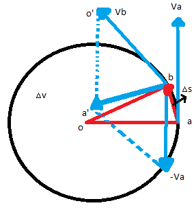
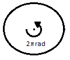
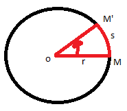

Una forma de entender el movimiento circular es considerar un cuerpo que se mueve alrededor de un círculo de radio r.
Para describir el movimiento en una parte del cuerpo en tenemos encuenta la velocidad lineal, la posición lineal y la aceleración lineal en el caso de que se analize la rotacion de todo el sistema debemos tener en cuenta la posición angular, la velocidad angular y la aceleración angular.
Se considera un cuerpo que se mueve sobre un círculo de radio r con velocidad constante por lo que no existe aceleración.
Consideramos el caso anterior, sin embargo la velocidad empezará a aumentar o a disminuir por lo tanto hay aceleración y por consiguiente los vectores de velocidad no van a ser del mismo tamaño como en la figura anterior.
Vimos que el vector velocidad, en un movimiento en el espacio, está sobre la tangente a la trayectoria en el punto considerado y dirigido en el sentido del movimiento.
En este caso, el vector velocidad es tangente a la circunferencia y perpendicular al radio que llega al punto de tangencia.
El vector v varía (su magnitud v no pero su dirección si), por lo tanto, el cuerpo tendrá una aceleración.
Entre las posiciones A y B cuyo desplazamiento es 'delta de s' ver la figura sabiendo que la aceleración es un cambio de velocidad con respecto al tiempo entonces.

La figura nos da una construccion del vector v los triangulos 0AB y O'A'B' son semejantes a O'A' y O'B respecto a los lados OA y OB, utilizando el teorema de tales tenemos.
Entonces la aceleración media queda
La aceleración instantánea será dada cuando Delta de t tienda a 0 entonces
Concluimos que la dirección de a será la de delta de v y según la figura cuando las posiciones sean muy cercanas, está dirigida hacia el centro del círculo; a esto se le conoce como aceleración centrípeta.
Cuando un cuerpo gira de la posición angular tetasubzero hasta la pocision angular teta, diremos que es el desplazamiento angular que es delta de teta, con ese dato definiremos la velocidad angular media, como el desplazamiento angular respecto al tiempo transcurrido.
La unidad que se observa se conoce como radianes por segundo generalmente, pero también se puede denominar vueltas por segundo (rpm) o revoluciones por minuto, siendo una vuelta igual a un ángulo de 2 pi radianes.

Sea un cuerpo m que se desplaza a m' que describe una parte del círculo de radio r una parte del perímetro de este conocido como arco S; entonces diremos que el ángulo teta es igual al arco entonces se tiene que

Es la posición angular a partir de la recta OM
Si S=r el ángulo theta =1 radián